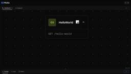
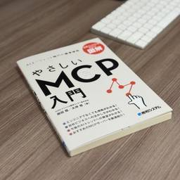

Generative Agents Tech Blog
https://blog.generative-agents.co.jp/
Generative Agents Tech Blog
フィード

「AIエージェントキャッチアップ #40 - Motia」を開催しました
Generative Agents Tech Blog
ジェネラティブエージェンツの大嶋です。 「AIエージェントキャッチアップ #40 - Motia」という勉強会を開催しました。 generative-agents.connpass.com アーカイブ動画はこちらです。 www.youtube.com Motia 今回は、API・イベント・エージェント向けの統合的なバックエンドフレームワーク「Motia」をキャッチアップしました。 MotiaのGitHubリポジトリはこちらです。 github.com 今回のポイント Motiaとは Motiaは、API・イベント・AIエージェントを統合したバックエンドフレームワークです。 JavaScript…
1日前

『AIエージェント時代の標準規格 やさしいMCP入門』レビュー
Generative Agents Tech Blog
吉田真吾（@yoshidashingo）です。 著者のみのるんさんから一足先に書籍をいただきましたので、書籍のレビューをさせていただきます。 本書はAIエージェント時代の標準規格となったMCP(Model Context Protocol)について、できるかぎり平易にわかりやすく、かつ入門に必要な全般的な知識を端的に理解できる書籍になっています。 なぜMCPが必要なのか？ [Chapter 1] AIエージェントが人間の業務を代替し自動化されるためには、人間がアクセスしているデータや情報リソースにAIエージェントも同様にアクセスする必要があります。この課題に対して、2024年11月にAnthr…
2日前

「AIエージェントキャッチアップ #39 - OpenHands-Versa」を開催しました
Generative Agents Tech Blog
ジェネラティブエージェンツの大嶋です。 「AIエージェントキャッチアップ #39 - OpenHands-Versa」という勉強会を開催しました。 connpass.com アーカイブ動画はこちらです。 www.youtube.com OpenHands-Versa 今回は、マルチモーダルなブラウジング機能を持つコーディングエージェント「OpenHands-Versa」をキャッチアップしました。 OpenHands-VersaのGitHubリポジトリはこちらです。 github.com 今回のポイント OpenHands-Versaとは OpenHands-Versaは、OpenHandsをベ…
8日前
「AIエージェントキャッチアップ #38 - Agentic Radar」を開催しました
Generative Agents Tech Blog
ジェネラティブエージェンツの大嶋です。 「AIエージェントキャッチアップ #38 - Agentic Radar」という勉強会を開催しました。 generative-agents.connpass.com アーカイブ動画はこちらです。 www.youtube.com Agentic Radar 今回は、Agentic Workflowのセキュリティスキャナー「Agentic Radar」を扱いました。 Agentic RadarのGitHubリポジトリはこちらです。 github.com 今回のポイント Agentic Radarとは Agentic Radarは、Agentic Workfl…
15日前
「AIエージェントキャッチアップ #37 - Container Use / Dagger」を開催しました
Generative Agents Tech Blog
ジェネラティブエージェンツの大嶋です。 「AIエージェントキャッチアップ #37 - Container Use / Dagger」という勉強会を開催しました。 generative-agents.connpass.com アーカイブ動画はこちらです。 www.youtube.com Container Use / Dagger 今回は、コーディングエージェントにコンテナ環境を与える「Container Use」と、AIエージェントやCI/CDに活用可能なワークフローランタイム「Dagger」について触ってみました。 Container UseのGitHubリポジトリはこちらです。 githu…
22日前
「AIエージェントを開発してます。外部サービスの連携にはMCPを使うといいですか？」への回答
Generative Agents Tech Blog
ここのところ、MCP（Model Context Protocol）が大きな話題になっています。 「AIエージェントを開発してます。外部サービスの連携にはMCPを使うといいですか？」という質問をよくいただくため、この記事でMCPを使うべきかの判断基準を整理します。 注意事項 MCPの概要はこの記事では説明しません。 MCPの用途はTools機能（外部サービスをLLMの判断で呼び出す機能）がほとんどのため、この記事の議論もMCPのTools機能を前提とします。 結論：MCPを使うべきかの判断フローチャート まず結論として、AIエージェントの開発者の視点で、MCPを使うべきかの判断フローチャートを…
1ヶ月前
「AIエージェントキャッチアップ #36 - Claude Code Action」を開催しました
Generative Agents Tech Blog
ジェネラティブエージェンツの大嶋です。 「AIエージェントキャッチアップ #36 - Claude Code Action」という勉強会を開催しました。 generative-agents.connpass.com アーカイブ動画はこちらです。 youtube.com Claude Code Action 今回は、Claude CodeをGitHub Actionsで動かす「Claude Code Action」について、ドキュメントやソースコードを読んだりしてみました。 Claude Code ActionのGitHubリポジトリはこちらです。 github.com 今回のポイント Clau…
1ヶ月前
「AIエージェントキャッチアップ #35 - LangChain Sandbox」を開催しました
Generative Agents Tech Blog
ジェネラティブエージェンツの大嶋です。 「AIエージェントキャッチアップ #35 - LangChain Sandbox」という勉強会を開催しました。 generative-agents.connpass.com アーカイブ動画はこちらです。 www.youtube.com LangChain Sandbox 今回は、セキュアなPythonコード実行環境「LangChain Sandbox」について、実際に動かしたりソースコードを読んだりしました。 LangChain SandboxのGitHubリポジトリはこちらです。 github.com 今回のポイント LangChain Sandbox…
1ヶ月前
イベント登壇レポート『Devinで実践する！AIエージェントと協働する開発組織の作り方』〜スケールアップ、スケールアウト、アンビエントでエージェントの役割分担を行う〜
Generative Agents Tech Blog
ジェネラティブエージェンツの西見です。 2025年5月28日に、Findy様主催のオンラインイベント「AIエージェントのオンボーディング -ヒトとAIの協同を支える"役割設計"とは」に登壇させていただきました。本記事では、「Devinで実践する！AIエージェントと協働する開発組織の作り方」と題した講演内容についてレポートします。 speakerdeck.com findy.connpass.com 開発組織におけるエージェントの役割分担 開発組織でAIエージェントを効果的に活用するためには、まずエージェントの特性を理解し、適切な役割分担を行うことが重要です。私は開発支援におけるAIエージェント…
1ヶ月前
【LangChain Interrupt参加レポート】Andrew Ng氏とHarrison Chase氏が語る「AIエージェントの現状と展望」
Generative Agents Tech Blog
2025年5月13日から5月14日にかけてサンフランシスコで開催されたAIエージェント開発のテックイベント「LangChain Interrupt」。Day 2では、UberやBlackRockといった企業がLangGraphとLangSmith上でエンタープライズプラットフォームを構築している事例が紹介された後、AI分野の著名な研究者であり教育者でもあるDeepLearning.aiのAndrew Ng氏と、LangChainのCEOであるHarrison Chase氏による注目の対談「State of Agents」が行われました。 本記事では、AIエージェントの現状認識、開発トレンド、そ…
1ヶ月前
【LangChain Interrupt参加レポート】Uberが語る、LangGraphを用いた開発者向けエージェント開発「From Pilot to Platform」
Generative Agents Tech Blog
2025年5月13日から5月14日にかけてサンフランシスコで開催されたAIエージェント開発のテックイベント「LangChain Interrupt」。Day 2では、AIエージェントの実用化に向けた具体的な取り組みが数多く紹介されました。 本記事では、UberのSourabh Shirhatti氏とMatas Rastenis氏によるセッション「From Pilot to Platform: Agentic Developer Products with LangGraph」の模様をお届けします。 1日に3,300万以上のトリップを処理し、数億行に及ぶ巨大なコードベースを抱えるUber。同社で…
1ヶ月前
「AIエージェントキャッチアップ #34 - AGENTCY」を開催しました
Generative Agents Tech Blog
ジェネラティブエージェンツの大嶋です。 「AIエージェントキャッチアップ #34 - AGENTCY」という勉強会を開催しました。 generative-agents.connpass.com アーカイブ動画はこちらです。 www.youtube.com AGENTCY 今回は、Internet of Agentsのための組織「AGENTCY」が公開しているプロトコル等について、ドキュメントを読んでみました。 AGENTCYのGitHubリポジトリはこちらです。 github.com AGENTCYのドキュメントはこちらです。 docs.agntcy.org 今回のポイント AGENTCYとは…
2ヶ月前
ARCHETYP様でDify研修を実施いたしました ～4時間のハンズオン研修で見えたDify活用の可能性と課題～
Generative Agents Tech Blog
ジェネラティブエージェンツの清水です。 先日、ARCHETYP様にてDify研修を実施させていただきました。今回は約10名の方にご参加いただき、エンジニアの方だけでなく、バックオフィススタッフや営業担当者の方々にも混じっていただいた合同研修となりました。 研修の概要 研修は午前2時間（10:00-12:00）と午後2時間（13:00-15:00）の計4時間で実施いたしました。オフラインでのハンズオン形式で進行し、参加者の皆様には実際にDifyを操作していただきながら、基本的なチャットボットの作成から始まり、Vision機能を活用したOCRアプリ、さらにはワークフローを使った複雑な処理まで、段階…
2ヶ月前
【LangChain Interrupt参加レポート】投資管理プラットフォームへのAIエージェント「Aladdin Copilot」導入から、LangSmithとLangGraphを活用してエンタープライズ規模で展開する取り組みへ
Generative Agents Tech Blog
2025年5月13日から5月14日にかけてサンフランシスコで開催されたAIエージェント開発のテックイベント「LangChain Interrupt」。Day 2では、金融大手BlackRock社による注目セッション「From Pilot to Platform: Aladdin Copilot (プラットフォームとしてのAladdin Copilotへ)」が行われました。BlackRockのAIエンジニアリングリードであるBrennan Rosales氏と、プリンシパルAIエンジニアリングのPedro Vicente Valdez氏が登壇し、同社の投資管理プラットフォームAladdinにAIエ…
2ヶ月前
【LangChain Interrupt参加レポート】LinkedInにおけるエージェント開発とLangGraphを用いたスケーリング戦略〜JavaからPythonへ〜
Generative Agents Tech Blog
2025年5月13日から5月14日にかけてサンフランシスコで開催されたAIエージェント開発のテックイベント「LangChain Interrupt」。Day 2ではLinkedInのDavid Tag氏が登壇し、「From Pilot to Platform: Agents at Scale with LangGraph」と題して、LinkedInにおけるエージェント開発とLangGraphを用いたスケーリング戦略について語りました。特にJavaスタックからエージェント開発のためにPythonスタックへ移行する話は必見です。 2つの「スケール」への挑戦 David Tag氏は講演の冒頭で、エン…
2ヶ月前
【LangChain Interrupt参加レポート】オンラインバンキングのAIエージェント化「AIプライベートバンカー」に取り組むNubank社の事例
Generative Agents Tech Blog
2025年5月13日から5月14日にかけてサンフランシスコで開催されたAIエージェント開発のテックイベント「LangChain Interrupt」。Day 2では、金融業界におけるAIエージェントの信頼性構築というテーマで、ブラジルの大手フィンテック企業NubankのSayantan Mukhopadhyay氏による示唆に富む講演「Building Reliable Agents: Evaluation Challenges」が行われました。 本記事では、Nubankがいかにして信頼性の高いAIエージェントシステムを構築し、その中でLangChainをどのように活用しているか、特に「評価 (…
2ヶ月前
【LangChain Interrupt参加レポート】データ処理エージェントの信頼性向上には「失敗モードの把握」が鍵となる
Generative Agents Tech Blog
2025年5月13日から5月14日にかけてサンフランシスコで開催されたAIエージェント開発のテックイベント「LangChain Interrupt」。 Day 2では、UC Berkeleyで博士課程の研究を進めるShreya Shankar氏が登壇し、「Building Reliable Agents: データ処理エージェント向けIDE構築からの教訓」と題して、LLM（大規模言語モデル）を用いたパイプラインの信頼性向上に関する研究成果を共有しました。 データ処理エージェントとその課題 Shankar氏はまず、自身の研究対象である「データ処理エージェント」について説明しました。これは、組織が抱…
2ヶ月前
【LangChain Interrupt参加レポート】Harvey社が語る、信頼性の高いリーガルAIエージェント構築の舞台裏
Generative Agents Tech Blog
2025年5月13日から5月14日にかけてサンフランシスコで開催されたAIエージェント開発のテックイベント「LangChain Interrupt」。Day 2では、リーガルAIエージェントの分野で注目を集めるHarvey社でエンジニアリングを率いるBen Liebald氏が登壇。 「Building Reliable Agents: Raising the Bar（信頼性の高いエージェントの構築：基準の引き上げ）」と題し、同社がどのようにリーガルAIエージェントを構築し、その品質を評価しているかについて語られました。 Harveyとは：リーガル・プロフェッショナルサービス向けドメイン特化AI…
2ヶ月前
【LangChain Interrupt参加レポート】LangChain FounderのHarrison氏が語る、AIエージェント開発における評価駆動開発の重要性
Generative Agents Tech Blog
2025年5月13日から5月14日にかけてサンフランシスコで開催されたAIエージェント開発のテックイベント「LangChain Interrupt」。Day 2のプロダクトキーノートに続き、AIエージェント開発における最重要課題の一つである「評価 (Evaluations、以下Evals)」に焦点を当てたセッションが行われました。 スピーカーは再びLangChainのCEOであるHarrison Chase氏が務め、なぜEvalsが重要なのか、そしてLangChainがこの分野でどのような取り組みを進めているのかについて、解説を行いました。 品質こそが最大のブロッカー Harrison Cha…
2ヶ月前
「AIエージェントキャッチアップ #33 - LLManager (LangGraph)」を開催しました
Generative Agents Tech Blog
ジェネラティブエージェンツの大嶋です。 「AIエージェントキャッチアップ #33 - LLManager (LangGraph)」という勉強会を開催しました。 generative-agents.connpass.com アーカイブ動画はこちらです。 www.youtube.com LLManager 今回は、承認リクエストを管理するLangGraphのワークフロー「LLManager」について、ソースコードを読んだり動かしたいしてみました。 LLManagerのGitHubリポジトリはこちらです。 github.com 今回のポイント LLManagerとは LLManagerは、LangG…
2ヶ月前
【LangChain Interrupt参加レポート】Devinの開発者が語るDevinの開発背景や内部構造、AIによるコーディングの未来
Generative Agents Tech Blog
2025年5月13日から5月14日にかけてサンフランシスコで開催されたAIエージェント開発のテックイベント「LangChain Interrupt」。Day 2では、AIソフトウェアエンジニア「Devin」を開発するCognition社のプレジデント、Russell Catlett氏が登壇し、「Multi-Agent Frontiers: Devinの構築」と題して、Devinの開発背景や内部構造、そしてAIによるコーディングの未来について語りました。本記事ではそのセッションの模様をお届けします。 はじめに - Devinの紹介 セッションの冒頭、Russell Catlett氏は、AIソフト…
2ヶ月前
【LangChain Interrupt参加レポート】JPMorgan Chaseが語る、投資リサーチAI「Ask D.A.V.I.D.」- マルチエージェントシステム構築と3つの教訓
Generative Agents Tech Blog
2025年5月13日から5月14日にかけてサンフランシスコで開催されたAIエージェント開発のテックイベント「LangChain Interrupt」。Day 2では、金融業界におけるAIエージェント活用の先進事例として、JPMorgan ChaseのDavid Odomirok氏とZheng Xue氏が登壇し、投資リサーチのためのマルチエージェントシステム「Ask D.A.V.I.D.」の構築について発表しました。 本記事では、その詳細なアーキテクチャと開発から得られた貴重な教訓についてお届けします。 投資リサーチの課題と「Ask D.A.V.I.D.」の登場 セッションの冒頭、JPMorga…
2ヶ月前
【LangChain Interrupt参加レポート】Cisco事例：LangGraphを活用したマルチエージェントシステムによるカスタマーサクセス
Generative Agents Tech Blog
2025年5月13日から14日にかけてサンフランシスコで開催されたAIエージェント開発の技術イベント「LangChain Interrupt」。Day 2の3番目のセッションでは、CiscoのチーフアーキテクトであるCarlos Pereira氏が登壇し、同社がいかにしてLangGraphを活用したマルチエージェントシステムによって顧客体験（CX）組織を変革しているかについて、具体的な事例と学びを交えながら解説しました。 Ciscoとカスタマーエクスペリエンス（CX）の重要性 Carlos Pereira氏はまず、CiscoにおけるCX部門の重要性を強調しました。Ciscoは年間560億ドル以…
2ヶ月前
【LangChain Interrupt参加レポート】Replit Agent v2 の進化と自律性の追求 – Michele Catasta氏 (Replit) と Harrison Chase氏 (LangChain) との対談
Generative Agents Tech Blog
2025年5月13日から5月14日にかけてサンフランシスコで開催されたAIエージェント開発のテックイベント「LangChain Interrupt」。Day 2のプロダクトキーノートに続き、注目セッションの一つとして、ReplitのMichele Catasta氏とLangChainのCEOであるHarrison Chase氏による対談が行われました。 本記事では、特に「Replit Agent v2」の進化と、エージェントの自律性向上に向けた取り組みについて語られた内容をお届けします。 blog.replit.com Replit Agent v2 の進化：自律性の飛躍的向上 対談の冒頭、H…
2ヶ月前
【LangChain Interrupt参加レポート】Day2キーノート: CEO Harrison Chaseが語るAIエージェントの現在と未来
Generative Agents Tech Blog
2025年5月13日から5月14日にかけてサンフランシスコで開催されたAIエージェント開発のテックイベント「LangChain Interrupt」。Day 2の幕開けは、LangChainのCEOであるHarrison Chase氏によるプロダクトキーノートでした。 Generative Agents Tech Blogではこれから複数回に分けて、イベントでのスピーチの模様をお届けします。 はじめに Harrison Chase氏は、LangChainのマスコットキャラクターであるオウムが宇宙を目指すユーモラスなAI生成ビデオと共に登壇。 「我々がこれをするのは、それが容易だからというわけで…
2ヶ月前
LangChainの`@tool`をPythonのクラスにつける例の紹介 #LangChain
Generative Agents Tech Blog
ジェネラティブエージェンツの大嶋です。 この記事では、LangChainの@toolをPythonのクラスにつける例を紹介します。 はじめに LangChainの@toolデコレーターは、自作の関数をLangChainのツールにするのに便利です。 たとえば以下のように使用します。 from langchain_core.tools import tool @tool def get_current_weather(location: str) -> str: """Get the current weather in a given location""" return f"It is cur…
2ヶ月前
LangChain Interrupt Day 1 参加レポート！メール対応エージェントを中心としたハンズオンが中心の一日に
Generative Agents Tech Blog
日本時間2025年5月14日から15日にかけて、サンフランシスコにてAIエージェント開発に特化したテックイベント「LangChain Interrupt」が開催中されています。 ジェネラティブエージェンツはLangChainアンバサダーとして本イベントに現地参加しています。 interrupt.langchain.com 本記事では、現地参加して得られたDay 1の模様をダイジェストでお届けします。Day 1は、メールエージェントを題材に、LangChainエコシステムの各コンポーネント（LangGraph, LangSmithなど）を駆使して、アイデアから本番稼働可能なエージェントを構築して…
2ヶ月前
「AIエージェントキャッチアップ #32 - The Agent Company」を開催しました
Generative Agents Tech Blog
ジェネラティブエージェンツの大嶋です。 「AIエージェントキャッチアップ #32 - The Agent Company」という勉強会を開催しました。 generative-agents.connpass.com アーカイブ動画はこちらです。 www.youtube.com The Agent Company 今回は、LLMエージェントの実世界のタスクでのベンチマーク「The Agent Company」について、ソースコードを読んだりしてみました。 The Agent CompanyのGitHubリポジトリはこちらです。 github.com The Agent Companyの論文はこちら…
2ヶ月前
Ruby on RailsアプリケーションをDevinにオンボーディングする
Generative Agents Tech Blog
はじめに ジェネラティブエージェンツの西見です。 今回は（なぜか）Ruby on RailsアプリケーションのDevinへのオンボーディングをしてみたので、その内容について紹介します。 Ruby on RailsアプリケーションをDevinにオンボーディングしようとしたときに困るのは、そもそもDevinにrubyがプリインストールされていないことです。 この問題は、開発環境をDev Containerで構築していれば解決できます。DevinからはDev Container CLI経由でRails環境を操作できるようにしておけば、Devinのワークスペース上に特別なセットアップをする必要がなくな…
2ヶ月前
「AIエージェントキャッチアップ #31 - OpenAI Codex CLI」を開催しました
Generative Agents Tech Blog
ジェネラティブエージェンツの大嶋です。 「AIエージェントキャッチアップ #31 - OpenAI Codex CLI」という勉強会を開催しました。 generative-agents.connpass.com アーカイブ動画はこちらです。 www.youtube.com OpenAI Codex CLI 今回は、OpenAIのコーディングエージェント「OpenAI Codex CLI」について、動かしてみたりソースコードを読んだりしてみました。 Codexの公式リポジトリはこちらです。 github.com 今回のポイント Codexの基本的な使い方 OpenAI Codex CLIは、ター…
2ヶ月前